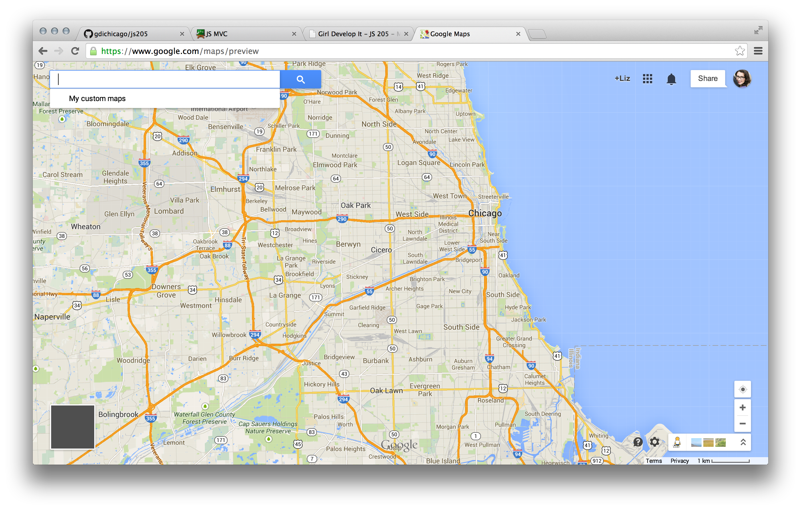

Intro to
MVC Frameworks
Welcome!
Girl Develop It is here to provide affordable and accessible programs to learn software through mentorship and hands-on instruction.
- Some "rules"
- We are here for you!
- Every question is important
- Help each other
- Have fun
Introductions
Tell us about yourself.
- Who are you?
- What do you hope to get out of this class?
- Random Question of the Day is...?
What we'll cover today
- What is MVC?
- Why MVC in JavaScript, why now?
- JavaScript in Big Apps
- Breaking down MVC, with examples
- Creating our own mini JavaScript framework
- Building our first mini app!
- MV* frameworks: types and some popular frameworks and tools
What is MVC?
Wikiattack!: Model–view–controller (MVC) is a software architectural pattern for implementing user interfaces. It divides a given software application into three interconnected parts, so as to separate internal representations of information from the ways that information is presented to or accepted from the user.
First introduced in the 1970's for use with Smalltalk-80 (wow!).
What is MVC?

MVC in JavaScript, why now?
- JS was released around 1995
- ... but wasn't take seriously as a programming language.
- Was used mostly for display and UX purposes, until...
- AJAX! (Google Maps and Mail usage in 2005-ish)
- People started building apps entirely in JS
- Apps like:
Hulu


Google Maps
Big App Functionality
There's a lot happening in these big apps. Specifically, JavaScript:
- Fetches data (via AJAX)
- Processes and calculates data
- Creates DOM (like w/jQuery)
- Reacts to events
Mo' Code, Mo' Problems
JavaScript needed a way to organize all of this application code.
Thankfully, other languages have been doing that for years.
Making it manageable
We can do a few things to make our code more manageable:
- Split into multiple files
- Modularize the code into re-usable chunks
- Use object-oriented concepts to organize code
- Separate the code into "model" vs. "view"
MVC Pattern in JavaScript
Dissecting the pieces of frameworks
Model
The model represents your data.
Important Jobs:
- Fetches data
- Processes data
View
The view is your presentation layer -
what people actually see.
Important Jobs:
- Create the DOM
- Handle DOM events
The "C"
Stands for "Controller" - it typically acts as a "middleman" between your app, your views, and your data.
Its use varies in JS MVC Framworks. More on that later.
Important Jobs:
- Acts as a 'middleman'
- Connects the Model to the Views
- Determines what should be shown and when
- (Not always used in JavaScript MVC Patterns)
Code Examples
What does MVC look like in JavScript?
Model Example
var Model = function(data, options) {
data = data || {};
options = options || {};
this.attributes = data;
// initialization bits here
};
Model.prototype.get = function(attrName) {
// return a value from the model's attributes (data)
};
Model.prototype.save = function(options) {
// save bits here
};
Model.prototype.delete = function() {
// delete bits
};
View Example
var View = function(options) {
options = options || {};
this.model = options.model;
this.template = options.template;
// initialization bits here
};
View.prototype.render = function(options) {
// render bits here
};
View.prototype.onDataChange = function(event) {
// do stuff like re-render view on data update
};
Controller Example
var Controller = function(route, options) {
options = options || {};
this.route = route;
// initialization bits here
};
View.prototype.show = function(options) {
// render bits here
};
View.prototype.onRoute = function(event) {
// when URL changes, do something
// like get assoc. Models & Views, and call this.show();
};
MVC Framework Classes
- Functions (Methods) & Attributes required by ALL Objects of that type
- Are then extended with custom Methods & Attributes when you create an instance of that class for app-specific use.
Data
- Usually comes from a server via
AJAXrequest - Can also be from a browser's LocalStorage
- Usually in
JSONformat nowadays
Example Data (JSON)
[
{
title: "Everything I Never Told You: A Novel",
author: "Celeste Ng",
imageUrl: "./images/books/book_1.jpeg"
details: [
pages: 304,
stars: 4,
rating: 1
]
}, {
title: "All the Light We Cannot See: A Novel",
author: "Anthony Doerr",
imageUrl: "./images/books/book_2.jpeg"
details: [
pages: 544,
stars: 4.5,
rating: 2
]
},
// ...
]
Templates
- Just HTML!
- Comes in different formats, though
- JS Templating Libraries are your friend
Example Template (Embedded in HTML)
<script type="text/template" id="book-template">
<div class="book">
<h4 class="book-title"></h4>
<div class="book-author"></div>
<div class="book-details">
<span class="detail"><span class="page-length"></span> pages</span>
</div>
</div>
</script>
Example Handlebars Template (Embedded in HTML)
<script type="text/x-handlebars-template" id="book-template">
<div class="book">
<h4 class="book-title">{{ title }}</h4>
<div class="book-author">{{ author }}</div>
<div class="book-details">
{{#each details}}
<span class="detail">{{ name }}<span class="value">{{ value }}</span></span>
{{/each}}
</div>
</div>
</script>